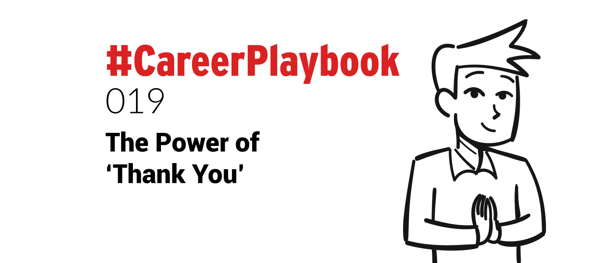

Thank You. Just 2 simple little words. But they have immense power.
Power to express gratitude, transform situations from negative to positive, or convey appreciation.
They have the power to heal, show forgiveness, and express understanding.
The power of Thank You has long been recognised by health professionals as having several benefits associated with it.
It is a proven fact that living in a state of gratitude has a favourable impact. It lowers blood pressure, reduces stress, and improves overall well-being.
People that dwell in the positive maintain better friendships, enjoy more career success, and have more fulfilling marriages.
All from using those 2 little words.
Thank You in the real world
While that is all good news, I have found that in reality we simply don’t say ‘Thank You’ nearly as much as we should.
Or it is mumbled by people as a reflex response without any real meaning behind it. I was guilty of that a lot - and sometimes still am.
Recognition and appreciation can move mountains and drive people to achieving great things. So, saying Thank You in abundance can bring real rewards.
The absence of appreciation has the direct opposite effect. It demotivates, devalues, and can create incredible frustration to those that require that recognition.
Looking someone in the eye, saying ‘Thank You’ sincerely and authentically is extremely impactful.
I have learned that saying Thank You often can bring benefits to many situations, personal as well as business.
Thank You is probably one of the most underused phrases in the world. It takes a second to say it and it can be applied in almost any situation.
· Thank You can be used when receiving a compliment
· Thank You can be used when receiving bad news “Thank You for sharing, I know this a hard time right now”
· Thank You can be used when receiving feedback or constructive criticism as an alternative to responding defensively.
· Thank You can be used when receiving advice - even if it is unsolicited.
· Thank You can be used to apologise for something. “Sorry I’m late. Thank You for your patience”
Thank You can be used in almost any interaction, and if you are not sure that you should say Thank You, say it anyway.
No-one is going to be cross because you showed them gratitude.
My advice? Say Thank You more, say it often, say it meaningfully.
Thank you in business environments
Companies all over the world, big and small know that ‘Thank You’ goes a long way to impacting the bottom line.
A trick I learned from Ben Sullivan, one of my mentors, is to capitalise the T and Y in Thank You when writing the phrase (which you might have noticed here).
It makes the 'You' stand out to the readers and places increased emphasis and meaning on the thanks given.
Extending thanks to customers and employees has become standard business practice within many organisations.
I recently read that a large company introduced a ‘thanking’ session’ at the start of their board meetings.
Employees praised each other for tasks and accomplishments before discussing any other business.
Why?
· Because ‘Thank You’ is extremely powerful.
· Because it creates a positive mindset before tackling the issues of the day.
· Because as human beings we crave that recognition and respond to it.
Warren Buffet famously said “Praise what you want, value what you get.”
He knew what he was talking about.
In a business environment the power of Thank You brings benefits to many interactions.
It can be used to diffuse tense situations, or to give recognition for a good job done.
Using Thank You correctly can soften criticisms and negative feedback.
For example: “Thank You for working so hard on this report, could we change a couple of items though?” or “Next time can we add this section?”
Saying Thank You to someone for a specific task or function can set a positive foundation for further communication, or future collaborations.
Here is example from one of my own email interactions:
 A Thank You can have positive effects on employees and clients.
A Thank You can have positive effects on employees and clients.
Many companies have realised this and make a point of sending clients and workers ‘Thank You’ gifts to send a message of appreciation.
According to Forbes magazine, companies that spend just 1% of their payroll budget on employee appreciation are “more likely to see better retention and financial outcomes.”
Happy and motivated employees lead to happy clients and that is good for business.
Thank You in personal relationships
How many times do you say ‘Thank You’ to your life partner or significant other?
Probably not as much as you should, and you should say it more. Much, much, more.
It took me a long time, and a lot of pain, to learn that lesson. But try it, I promise you will be pleasantly surprised by the results.
When partners believe they are valued it leads to better levels of commitment.
Showing appreciation influences how couples behave toward each other in a marriage.
Researchers believe that they can predict whether a relationship will endure purely based on the level of gratitude that partners display.
Studies show that even failing marriages can be turned around by simple, daily expressions of gratitude.
The more gratitude and appreciation expressed, the better chance the marriage has of thriving.
I don’t know what the recommended number of ‘Thank You’s’ is to say per day, but I am guessing the more the better 😁
Experience has shown me that increasing the amount and level of gratitude I express leads to more productivity, better relationships, and more pleasant interactions with people.
Even if they are absolute strangers.
So, get into the habit of saying ‘Thank You’ profusely.
Say it at work, to your spouse, to your colleagues, your relatives, your friends, even your kids. Trust me, your life will be better for it.